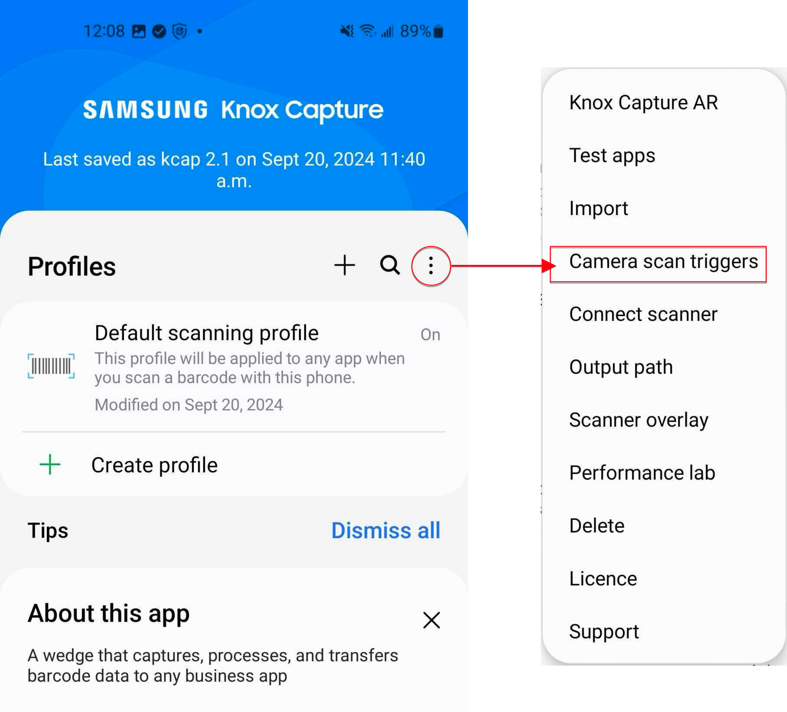
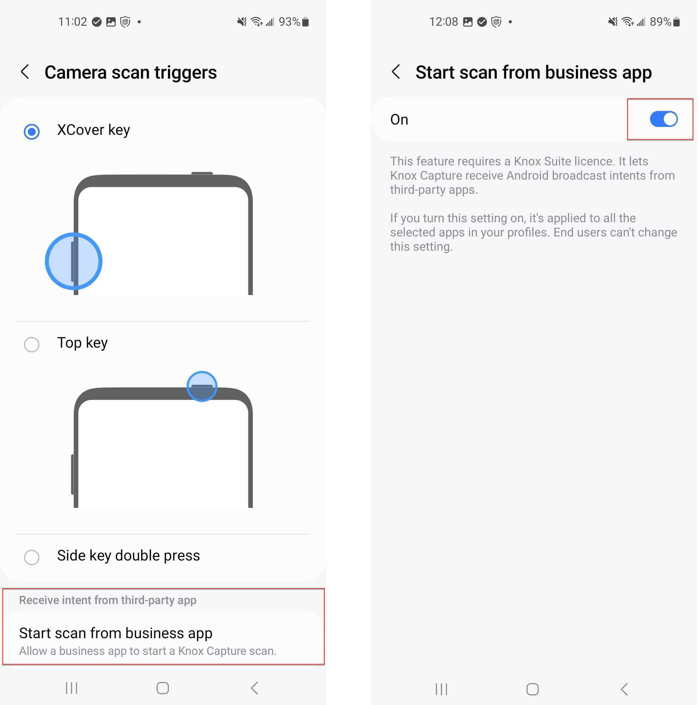
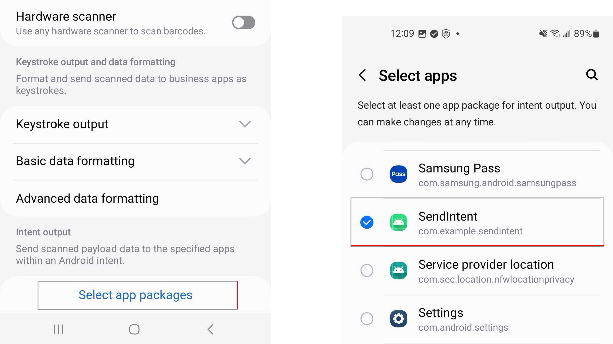
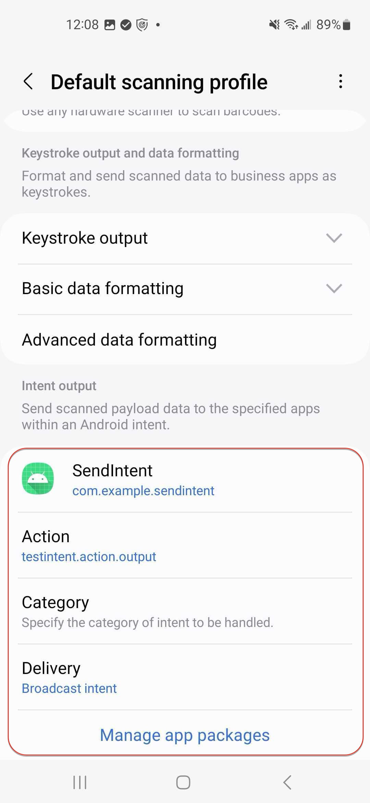

Start scan from business app
Last updated April 23rd, 2025
You can configure Knox Capture to allow end users to trigger a barcode scan by tapping a “soft-trigger” button from within a business app’s UI, instead of using the floating action button, or relying on a separate hardware key.
Admin workflow
Prerequisites
Before you can configure Knox Capture to launch from a business app, you must first ensure that your business app developers have implemented the correct trigger logic in their code. Refer them to the Knox Capture soft-trigger developer tutorial, as well as the corresponding sample code on how to do this.
Configure Knox Capture
Once your developers have implemented a soft-trigger in the app, you’ll need to configure the following in Knox Capture:
-
On your app’s home screen, tap Options > Camera scan triggers.

-
On the Camera scan triggers screen, go to the Receive intent from third-party app section, then tap Start scan from business app.
-
On the following screen, turn the feature On, then return to the app home screen.
-
Tap the scanning profile that you want to use for your end users. If you didn’t create any custom profiles, tap Default scanning profile.

-
On the profile screen, scroll to the bottom, then under Intent output, tap Select app packages.
-
Select the app that you want use to trigger a scan, then return to the profile screen.

-
On the profile screen, you’ll see the selected app under Intent output. Configure the following:
- Under Action, enter the intent action that you want to trigger the barcode scanner. This information must be obtained from your app developer.
- Under Category, leave this blank.
- Under Delivery, select Broadcast intent.

-
Once the app is configured, return to the app’s home screen and export the profile’s configuration file to your EMM.
-
In your EMM, create a managed configuration for Knox Capture and deploy the saved configuration to your end user’s devices.
Developer workflow
This content is intended for 3rd party app developer audiences who need to implement a Knox Capture soft-trigger button in their customer’s business app’s UI.
About soft-triggers
A soft-trigger in your app’s UI allows customers to initiate a scan using a dedicated UI button instead of Knox Capture’s floating action button, or a specific hardware key. The following sample code — written in Kotlin — can be used as a template when configuring your app.
Define scan trigger options in the app UI
Before you configure your customer’s business app to soft-trigger Knox Capture, you should confirm with your customer the scan modes and barcode selection methods they want to use. See the Scan engine settings documentation for an explanation of each scan mode and the barcode selection methods available.
Use the following sample code to define the scan modes, selection types, and parse GS1 methods available to your customers when using the app.
val scanModeCandidates = listOf( "Single scan","Multi scan", )
val scanSelectionCandidates = listOf("Automatic","Batch","Aim and scan", "Tap to select")
val gs1Candidates = listOf(false, true)
The following sample code triggers a single scan using automatic barcode selection with parse GS1 off, based on the values defined above:
private var scanMode = scanModeCandidates[0]
private var selection = scanSelectionCandidates[0]
private var parseGs1 = private var selection = scanSelectionCandidates[0]
private var parseGs1 = gs1Candidates[0]
Create the soft-trigger intent
val i = Intent().also {
it.action="com.samsung.android.knox.intent.api.ACTION"
it.putExtra("com.samsung.android.knox.intent.api.TRIGGER_ACTION","START")
it.setPackage("com.samsung.android.app.smartscan")
/**this tells what kind of scan you are going to trigger
based on the previous code scanMode = "Single scan", selection = "Automatic", and parseGs1 = false**/
it.putExtra("scanner_mode",scanMode)
it.putExtra("barcode_selection",selection)
/**this adds extra data for "Parse GS1."**/
it.putExtra("parse_gs1",parseGs1)
val p = PendingIntent.getActivity(
this,
0,
/**Enter your business app's intent. Provide this intent to the customer**/
Intent(),
/** Set both of these flags **/
PendingIntent.FLAG_IMMUTABLE or PendingIntent.FLAG_UPDATE_CURRENT
)
it.putExtra("pending_intent",p)
}
sendBroadcast(i)
Troubleshooting
After you configure the business app, you can use Knox Capture to test your soft-trigger button. If you attempt to trigger a scan using the soft-trigger, but Knox Capture doesn’t launch, consider trying the following:
- Is the Start scan from business app feature enabled?
- If you’re using a custom profile, is the activity in that profile?
- Is your activity running in the foreground when you broadcast the intent? Knox Capture only allows foreground apps to trigger a scan.
- Is the pendingIntent object added to your broadcast? Knox Capture will need it to verify the sender for security purposes.
- Is Knox Capture active? If you installed Knox Capture but never launched the app, it remains in an inactive state and will not listen to broadcasts from any 3rd party app. Launch Knox Capture to activate it.
End user workflow
After you deploy Knox Capture to your devices, the device users simply launch the scanner by opening their business app and tapping the soft-trigger button on the UI.

On this page
Is this page helpful?